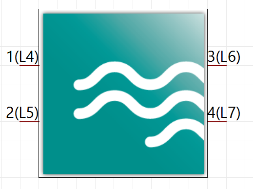
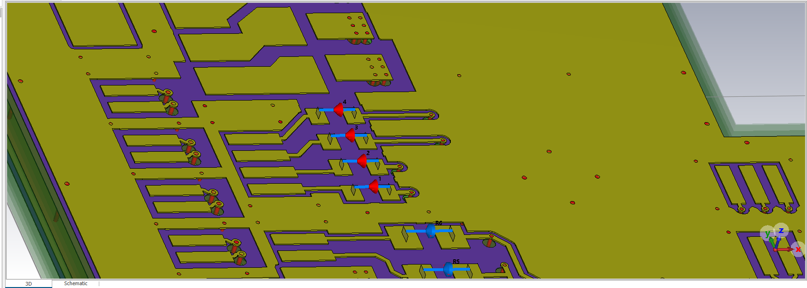
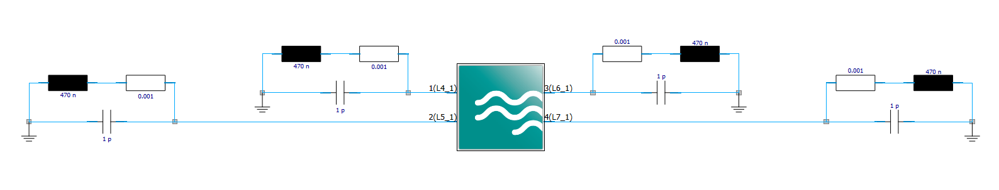

3D Simulation: Ports & Lumped Elements¶
In this chapter, we will use the functions explained in the Settings for 3D Simulation-Chapter. The goal is to move components from the PCB onto the schematic, and model their behavior with circuit elements.
Preparations are a bit longer, since some code from the circuits module is needed:
import cst.interface
from cst.eda import pcb_api
import cst.units
from pathlib import Path
import tempfile
from typing import Tuple
data_dir = Path(cst.interface.install_paths.root()) / "Online Help" / "PythonTutorial" / "data"
project_dir = Path(tempfile.mkdtemp())
print(f"Working in temporary directory: {project_dir}")
pcb_file = data_dir / 'cst_phone.tgz'
# from circuits sesssion
def create_block(
prj: cst.interface.Project,
block_type: str,
*,
name: str = None,
property: dict = None,
position: Tuple[int, int] = None,
rotation: int = None,
):
"""Creates a new block in the given project of the given type, more attributes or the block are optional"""
block = prj.schematic.Block
block.Reset()
block.Type(block_type)
if name:
block.Name(name)
if property:
for key, value in property.items():
block.SetDoubleProperty(key, value)
if position:
block.Position(position[0], position[1])
if rotation:
block.Rotate(rotation)
block.Create()
We proceed step by step. First gather the inputs:
# Create an instance of a PCB
pcb = pcb_api.PCB.convert_from(pcb_file)
# Dict of components that should be replaced with the given values
components = {
"L4": {"R": 0.001, "L": 470, "C": 1},
"L5": {"R": 0.001, "L": 470, "C": 1},
"L6": {"R": 0.001, "L": 470, "C": 1},
"L7": {"R": 0.001, "L": 470, "C": 1},
}
After creating an instance of our Example-PCB, we create a dictionary containing
the names of the elements we want to replace, and the values for the replacement circuit.
Using the names, we create a differential port between the two pins of the elements we want to replace.
In our case, this is L4, L5, L6 and L7.
This is done using the create_differential_port_between_two_pins() function:
def create_differential_port_for_component(pcb: pcb_api.PCB, refdes: str):
"""Creates a differential port between two pins of the given component."""
comp = pcb.component(refdes)
pins = comp.pins
assert len(pins) == 2
# Create differential port between two pins
discrete_port = pcb.simulation_settings.discrete_port(pins[0])
discrete_port.use_pec_sheet = False
discrete_port.reference_pins = [pins[1].name]
discrete_port.label = refdes
# Create differential port for all listed components
for refdes in components.keys():
create_differential_port_for_component(pcb, refdes=refdes)
Now, the pcb setup is put into CST:
# Connect to a running DesignEnvironment or start a new one
de = cst.interface.DesignEnvironment.connect_to_any_or_new()
# create a new MWS project
prj_3d = de.new_mws()
# import the pcb to the project
pcb.import_to(prj_3d)
Now, observe, that due to 3D ports, there are pins on the schematic block:

Now, we put some inductor models on the schematic.
We use the sophisticated function create_standard_inductor_model_circuit.
def create_standard_inductor_model_circuit(
prj: cst.interface.Project,
port_index: int,
pcb_block_name: str,
L: float = 470,
R: float = 1,
C: float = 1,
):
"""Creates a standard inductor model circuit in the given project."""
# Get X- and Y-Position of the Pin in the Schematic
pcb_block = prj.schematic.Block
pcb_block.Reset()
pcb_block.Name(pcb_block_name)
# Get the pin index from the port index
pin_index = pcb_block.GetPinIndexFromPortIndex(port_index)
assert pin_index >= 0
pin_pos_x = pcb_block.GetPinPositionX(pin_index)
pin_pos_y = pcb_block.GetPinPositionY(pin_index)
# Get the layout of the Pin
layout = pcb_block.GetPinLayout(pin_index)
# Depending on the layout, Change settings for the Position of the model circuit
if layout[0] == "RIGHT":
sign = 1
rotation = 180
else:
sign = -1
rotation = 0
translator_x = sign * (300 + layout[1] * 600)
# Set X-Position for the components
component_pos_x = pin_pos_x + translator_x
# Create Inductor
create_block(
prj,
r"CircuitBasic\Inductor",
name=f"L{pin_index}",
position=(component_pos_x + (sign * 100), pin_pos_y - 100),
property={"Inductance": f"{L}"},
rotation=rotation,
)
# Create Resistor
create_block(
prj,
r"CircuitBasic\Resistor",
name=f"R{pin_index}",
position=(component_pos_x - (sign * 100), pin_pos_y - 100),
property={"Resistance": f"{R}"},
rotation=rotation,
)
# Create Capacitor
create_block(
prj,
r"CircuitBasic\Capacitor",
name=f"C{pin_index}",
position=(component_pos_x, pin_pos_y),
property={"Capacitance": f"{C}"},
rotation=rotation,
)
# Create Ground
create_block(
prj,
r"Ground",
name=f"GND{pin_index}",
position=(component_pos_x + (sign * 200), pin_pos_y + 25),
)
# Create list of component pins that should be connected
component_pins1 = [
["Block", pcb_block_name, pin_index],
["Block", f"R{pin_index}", 1],
["Block", f"C{pin_index}", 1],
]
component_pins2 = [["Block", f"L{pin_index}", 1], ["Block", f"R{pin_index}", 0]]
component_pins3 = [
["Block", f"GND{pin_index}", 0],
["Block", f"L{pin_index}", 0],
["Block", f"C{pin_index}", 0],
]
# Connect pins of each list of component pins
net = prj.schematic.Net
net.AddComponentPorts("", component_pins1, False)
net.AddComponentPorts("", component_pins2, False)
net.AddComponentPorts("", component_pins3, False)
net.Apply()
# Get the schematic Block of the PCB
block = prj_3d.schematic.Block
block.StartBlockNameIteration()
# PCB Block is the only Block in the project at the moment
pcb_block_name = block.GetNextBlockName()
block.Name(pcb_block_name)
for port_index in range(0, block.GetNumberOfPorts()):
# Get the block again, as it is reset in "Create_standard_inductor_model_circuit"
block.Reset()
block.Name(pcb_block_name)
port_label = block.GetPortLabel(port_index)
if port_label in components:
create_standard_inductor_model_circuit(
prj_3d,
port_index,
pcb_block_name,
R=components[port_label]["R"],
L=components[port_label]["L"],
C=components[port_label]["C"],
)
The function needs:
an instance of “pcb_api.PCB”
a component name
The function then queries the API for the pins of the component, and whether there are exactly two pins. It then creates a discrete port between the two pins.
The first pin is passed to
pcb.simulation_settings.discrete_port(pin).The second pin is then put into
reference_pins.
By setting use_pec_sheet = False we instruct the 3D model creation, to not create a component PEC sheet, but instead
create a horizontal port.
The label of the port is set to the name of the element replaced.
All other settings are left at their default value.
After this is done for all four components that we want to replace, we are ready to import the pcb to a 3D project.
This is done as usually, using pcb.import_to().
As shown below, we can see the differential ports on our PCB.

Now we can insert the equivalent circuits for the four inductors.
To do this, we iterate through the pins of the PCB, get the corresponding label of the port,
and pass the pin and the desired component values to create_standard_inductor_model_circuit().
Depending on the position of the pins, the created circuit is created at different positions in the schematic.
To determine if the pin is on the right, or the left side of our PCB Block,
we can use the GetPinLayout(pin) method on the PCB block.
This returns a tuple of two values.
The first one is a string stating what side the pin is positioned on the block.
The values can be “LEFT”, “RIGHT”, “TOP” or “BOTTOM”.
The second value of the tuple represents the position of the pin on the stated side.
In the code shown above, we know that the pins will only be either on the “LEFT” side of the block or on the “RIGHT”. If the pin is on the right, we set the value of the “rotation” variable to 180. This will determine the rotation of the components later on so that we can easily create a mirrored circuit. The variable “sign” also depends on the side that the pin is. This variable determines if we translate the components to the right, or to the left.
Using these calculations, a ground block and the three blocks required for the equivalent circuit are created. The position of each block is altered slightly from the previously calculated positions. Finally, three nets are created, connecting the components according to the equivalent circuit for the inductor.
The resulting schematic can be seen below.
